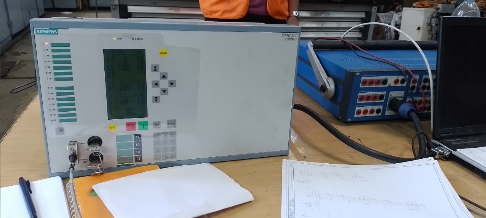
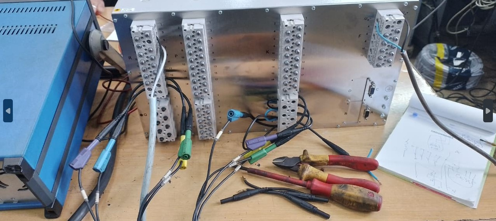

Digital Protection Relay Test Procedure Elaboration
Company: ONEE-BE (Mohammedia Thermal Power Plant) | Duration: July 2024 – August 2024
Core Objectives
The primary goal was to elaborate a formal, structured testing procedure for the Siemens **SIPROTEC digital protection relays** installed on the thermal power plant's alternator and transformers. This involved bridging theoretical knowledge of electrical protection with hands-on application using professional testing equipment.
Internship Report Status: The full report will be uploaded soon.
Main Themes & Execution
Key Areas of Focus:
- Relay Configuration Analysis: Detailed study of Siemens SIPROTEC 7UT6x family relays and their specific protective functions (e.g., Differential 87G, Overcurrent 51G, Stator Earth Fault 64G).
- Test Protocol Development: Creation of step-by-step procedures to verify the trip settings, pickup times, and overall logic of each protective function.
- Hands-on Testing: Practical application of test protocols using the OMICRON CMC Test Universe to simulate fault conditions and measure the relay response time.
- Critical Equipment Verification: Focused on protection schemes for the main **Alternator** and **Step-Up Transformers** (Generator/Unit Protection).
Results and Takeaways
Achieved Outcomes
The project successfully delivered a robust, documented test procedure, ensuring the protection settings met the required grid standards. This experience provided practical mastery of high-voltage power system protection and diagnostic tools.
- Validated the entire protection chain from CT/VT secondary terminals through the relay logic to the trip outputs.
- Gained proficiency in the **Omicron Test Universe** suite (Quick CMC, Ramping, State Sequencer).
- Developed a deep appreciation for the strategic role of protection relays in ensuring the reliability and safety of a major power plant.
Visuals & Evaluation
On-Site Work & SIPROTEC Relays:

Working on the SIPROTEC protection relay panel.

OMCIORN CMC test kit setup in the electrical workshop.
Supervisor's Evaluation (18.5/20)
Overall Remarks:
"Très bon élément" (Very good element). The overall grade awarded was 18.5/20.
Full Evaluation Sheet:

Evaluation Sheet from Mr. M. Mouzouri, ONEE Internship Supervisor.